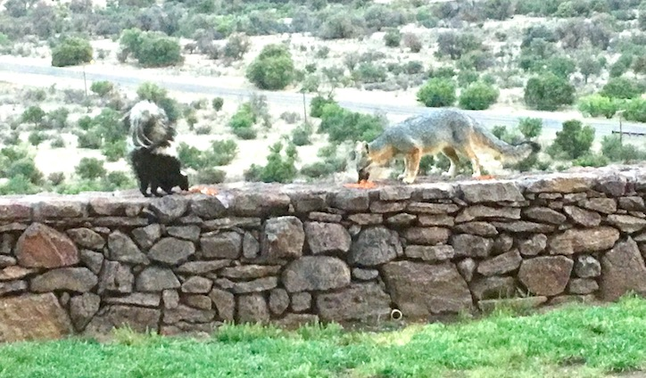
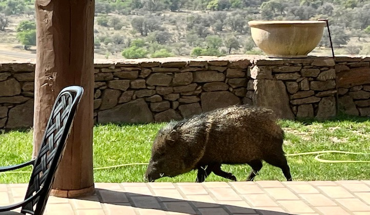
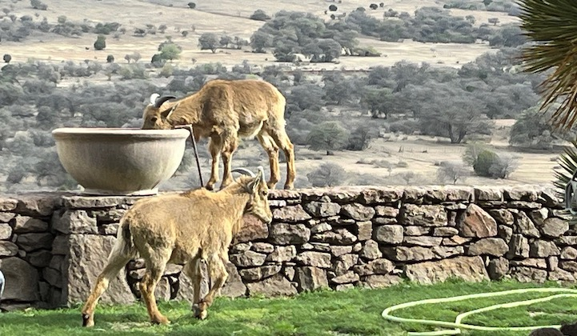
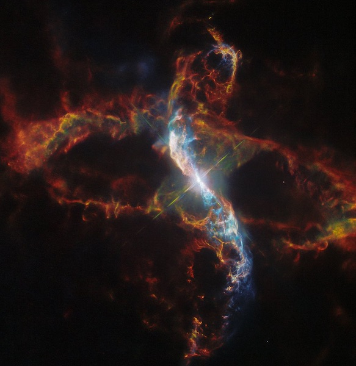
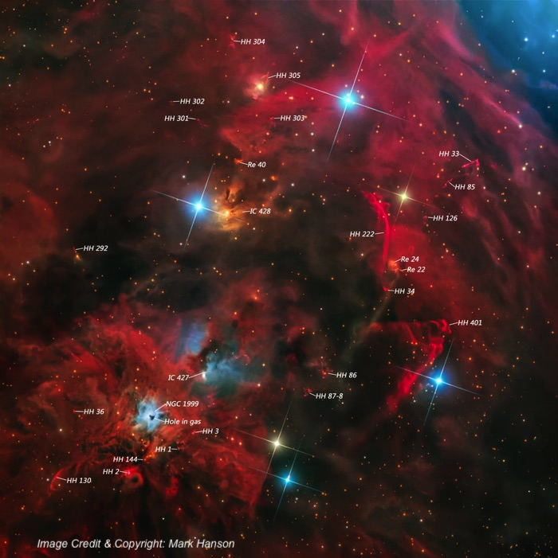
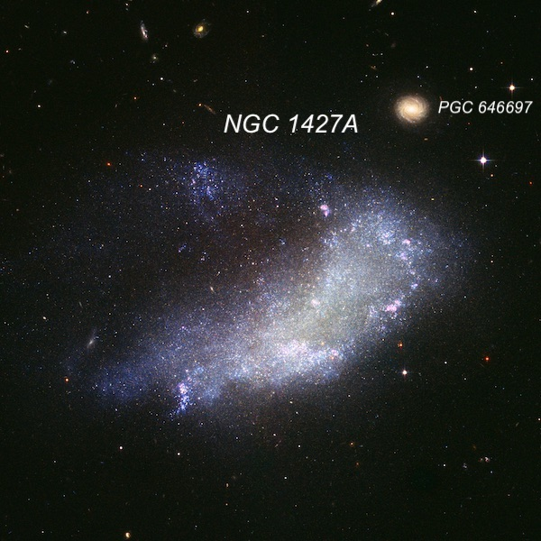
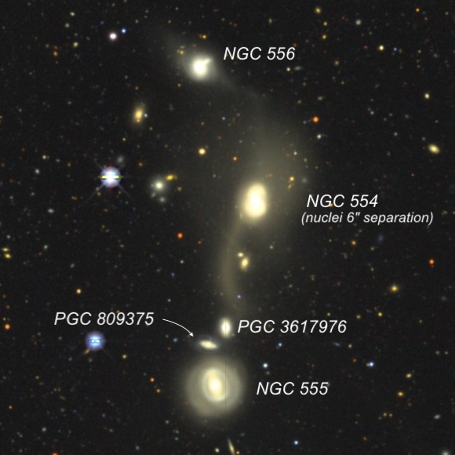
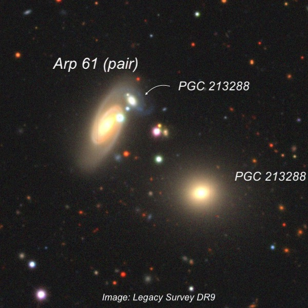

OR: Two nights (Nov. 20/21) on the Lowrey 48" (Final Part 3)
Guess Who's Coming to Dinner —
You just never know who might show up nightly as a dinner guest at the Lowrey residence. We’re not too picky and the dress code is casual, whether it’s a Freddy the Fox and Friends, The stinky Javelina crew, the cancelled Pepé Le Pew (who shares a meal with a fox in the photo), or an Anger (herd) of Aoudads, who visit when they’re thirsty.



I could go on, whether it’s terrestial animal or celestial beasts, but I think it’s about time for me to wrap up the last of these three observing reports (plus ORs from Akarsh Simha and Howard Banich).
R Aquarii Nebula = Cederblad 211 (Ced 211)
23 43 49.4 -15 17 04; Aquarius
Size 2'x1'
Akarsh has already described the view of this subtle nebula, which includes a diffuse halo around the bright coppery/orange star R Aquarii and two wings or arms stretching SW and NE, with the NEern arm more prominent. Other observers have described a knot at the NE tip, though I didn’t notice this feature in the brief observation. But this star is not your garden-variety long period red variable.
The German astronomer Karl Ludwig Harding discovered the variability of R Aqr back in 1811. Harding is also credited with the discovery of the asteroid Juno in 1804, as well as the variability of R Vir, R Ser, and S Ser. But for deep sky observers, his claim to fame was the discovery of the Helix Nebula, NGC 7293, also in Aquarius! This huge planetary was missed by William Herschel, probably due his restricted field of view (about 15’). In fact, Harding was observing with an 8.5-inch speculum reflector (with a wider field), that was built by Herschel himself!
As a Mira-type variable (pulsating red giant), R Aqr has a nominal period of about 387 days, but the period can vary in length as well as the brightness range. In terms of magnitude, it ranges from 5th magnitude all the way down to V = 12.4. During most of the 19th century, it was considered a typical long-period red variable, but in 1893, Harvard astronomer Williamina Fleming first detected faint emission lines in its spectrum. Her log entry from October 17th reads, “faint nebular band 5007 [O III], and bright hydrogen lines [hydrogen-beta] to [hydrogen-delta] visible.” In 1919 Mt. Wilson astronomer Paul Merrill used the 100-inch to photograph the spectrum. He found conspicuous emission lines characteristic of a gaseous nebula - at 5007, 4959 and 4363 Angstroms. In a later paper, he noted that the lines were seen from 1919 to 1925, but decresed in intensity until from 1928 to 1934, when they were very weak. At the time, it was the only known red giant star (M-type) that was associated with gaseous emission lines.
Based on these anomalous features, Lowell Observatory astronomer Carl Lampland photographed the star in 1921 with the 40-inch reflector at Flagstaff and discovered the star was surrounded by a peculiar nebula. He reported "the most conspicuous detail of this structure is an oval-shaped configuration composed of arcs of well-defined nebular filaments. The formation, in which the star is centrally and symmetrically placed, reminds one of the arcs bounding the double convex lens-shaped figure…” The following year, Merrill discovered the spectrum had three components, which he closely monitored from 1928 through 1949 as it showed remarkable changes. The main features he described are
1) M-type absorption spectrum from the cool, long-period variable red giant2) A secondary spectrum of a hot, blue star (now considered a white dwarf)3) Emission lines from of a surrounding gaseous nebula.
So, what’s going on here in this evocative HST image?? At a distance of ~700 light-years, R Aquarii is the nearest and brightest interacting or "symbiotic binary." As the red giant and white dwarf stars orbit each other, the white dwarf siphons off mass from its larger companion. The accreted material piles up and sporadically triggers an explosive outburst. The nebula's expanding shells point to two major ejection events as recently as 640 and 180 years ago. You can actually see a bit of this expansion in a Hubble time-lapse from 2014 to 2023 (5 frames): An inner bipolar outflow of gas produces short, curved jets towards the northeast and southwest, with the northeastern component currently more prominent due to a bright clump that first appeared between 1970 and 1977 — these curved jets are the feature that we viewed. UV radiation from the hot white dwarf, as well as shock waves produced by the high-speed jet, photoionizes the gas in the optical jets.

NGC 1999 = The Cosmic Keyhole05 36 25.3 -06 42 57; OrionReflection NebulaSize 2'x2'
Caroline Herschel, in a letter to her nephew John Herschel, wrote, “I once heard your father, after a long awful silence, exclaim "Hier ist wahrhaftig ein Loch im Himmel! [Truly there is a hole in the heavens here!]”William was observing a region around Rho Ophiuchus that was devoid of stars. It wasn’t until the 1920s that Barnard realized these dark areas were due to obscuring material: clouds of molecular gas, whose dust content absorbs the light of background stars. And dark clouds, which range in mass and size from giant molecular clouds (GMCs) to tiny globules, are the sites of star formation in our galaxy!
NGC 1999 is a small reflection nebula in the Lynds Dark Nebula (LDN) 1641 region of the Orion A GMC. It’s the site of a small group of two dozen pre-main sequence stars and protostars, including the driving source of the Herbig-Haro objects HH 1 and HH 2. Howard wrote about these objects in a February 2022 issue of Sky & Telescope (“Punching a Hole in the Sky”). The reflection nebula is illuminated within by the Herbig Ae/Be star V 380 Ori, a multiple system with a circumstellar disk and a primary that’s 100x as luminous as the Sun. The secondary is also a pre-main-seuence T Tauri star, and there could be additional components. What makes NGC 1999 special is a compact (20" to 30") ultra-dark patch (corresponding to 10,000 AU), which traditionally has been assumed to be a small dense, dark globule and probable site of new star formation – at least until 2010!
A study with the European Space Agency’s Herschel space telescope, probed the object in the infrared. At these longer wavelengths, Herschel should have been able to see into this cloud and detected sources inside. Inside it there was no source — just a dark patch! Observations showed that if it was a globule, its mass was only 2.4% of the mass of the Sun. In fact, near-infrared images detected faint background stars that were less affected by extinction inside the dark patch than it the surrounding nebula. That leaves one alternative — the dark patch is actually what William Herschel surmised — a hole or cavity in the NGC 1999 reflection nebula. The team of astronomers surmised that the hole was excavated by protostellar jets from the V 380 Ori multiple system.
I’ve gawked at this object several times in the 48”, though the dark void was also fascinating in my old 18”. First off, the reflection nebula has a unusually high surface brightness and it surrounds a prominent mag 10.5-11.0 star (V 380 Ori). The dark patch blots out a portion of the bright nebula just west of center. In the 48”, the patch is sharply etched into the nebulosity and forms a "keyhole" or "anvil" outline with a thin extension to the east and a thicker N-S flat section on the west side. The contrast of the dark "hole" is extremely high, and the appearance is essentially identical to the HST image.
This photo from Mark Hanson of the entire star-forming complex containing NGC 1999 (lower left side) was the Astronomy Picture of the Day (APOD) for March 7, 2018.

NGC 1427A = PGC 1350003 40 09.3 -35 37 28; EridanusV = 12.9; Size 2.3'x1.5'; Surf Br = 14.1; PA = 70°
NGC 1427A is the brightest irregular galaxy in the Fornax Galaxy Cluster and it's considered in several morphological respects a twin of the Large Magellanic Cloud (LMC). Since I had just canceled a trip to the southern hemisphere, where I had planned to spend much of the time in the LMC, I figured I’d select a substitute to view in the 48”! The Hubble image below reveals that NGC 1427A lacks a nucleus, a bar, and even a central condensation; and strangely, most of its star-forming regions and OB-associations are arranged along what seems to be a distorted half-ring on its western (right) side.
In addition, there is a northern clump of very young, blue stars that appears to be connected to the northwest rim of the main body by a tenuous stream of stars. The general shape of the galaxy, the stream of stars in the north (top) and several narrow, linear streams on the southeast end (lower left) are features seen in a small class called “Jellyfish" galaxies. NGC 1427A is plunging through the dense intracluster medium (ICM) of the Fornax Galaxy Cluster at a speed of ~ 600 km per second. This high-speed motion creates a "headwind", and the hot ICM strips away its gas and dust ("ram-pressure stripping"), creating a tapering arc-shape and triggering star formation. Another example of a Jellyfish galaxy is ESO 137-001 in Triangulum Australe.
I couldn’t see much detail in the 48”, but here’s what I wrote: "fairly faint, very irregular, elongated shape, low surface brightness, nearly 2' diameter. Appears widest on the west end and narrower on the east end, bending or curving in the middle. The northern half of the galaxy (which has a "jellyfish" appearance on images) wasn't obvious. "

NGC 554 Group01 27 09.6 -22 43 30; CetusV = 13.7; Size 0.7'x0.5'; Surf Br = 12.2; PA = 177°
Akarsh posted his observations of this trio of NGC galaxies (554, 555, and 556), but my real target was the central galaxy — NGC 554. This is an interacting, merged pair with tidal debris to the west (right) and tidal tails to the north (up) and south (down). The two nuclei are separated by only 6”: at the distance of this group (about 425 million light-years) that translates to a projected separation of only 12,000 light-years, which is half the distance from the Sun to the center of our galaxy. NGC 556 might be involved in an interaction also, based on a “wing” to the southwest, but PGC 809375 is photobombing the image — it’s redshift is twice the other galaxies, so it lies far in the background at nearly a billion light-years away!
To put some perspective on the 6” separation between NGC 554A and NGC 554B, consider the excellent double star Gamma Arietis, visible this time of year. Gamma Ari is a perfectly matched pair of 4.5-magnitude stars at 7” separation that was discovered by Robert Hooke in 1664 using a long focal length single-lens refractor. You can split this pair today in a small 60mm refractor at 50x or higher, but with a pair of galaxies this close you need an 18” or larger scope – the cores and nuclei of the two galaxies merge together into a single clump in smaller scopes. It takes good seeing and high power to resolve a really close “double-star” galaxy like NGC 554, which should fully merge in a few hundred million years and settle down as a single elliptical galaxy.

Arp 61 = UGC 3104 + PGC 21328804 36 40.3 -02 17 26; EridanusV = 14.2; Size 1.0'x0.5'; Surf Br = 13.2; PA = 157°M51-type system?
In the Atlas of Peculiar Galaxies, Halton Arp placed this pair in his category “Spiral Galaxy with small, high surface-brightness companions on arms.” He made a separate category for spiral galaxies with large, high surface-brightness companions on arms, and that’s where he placed M51. It appears that the companion (PGC 213288) has blue arms indicating ongoing massive star formation. The main spiral (UGC 3104) lies at a distance of ~420 million light-years, but unfortunately there’s no redshift data on PGC 213288, so we can’t say with certainty that it’s at the same distance as UGC 3104. In fact, there’s never been a dedicated study of the pair.
We observed Arp 61 at 610x, and although the elongated glow of UGC 3104 has a fairly high surface brightness I couldn’t resolve its spiral arms. A fairly bright 15th magnitude star is superposed just to the northwest of the central region. PGC 213288, Arp’s “small, high surface-brightness companion”, is just off the NW edge of the halo. It was easily seen as a small, elongated glow angling SW to NE.
